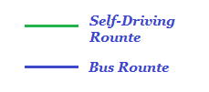

<!DOCTYPE html>
<html>
<head>
	
	<title>TongYe's Footprint</title>

	<meta charset="utf-8" />
	<meta name="viewport" content="width=device-width, initial-scale=1.0">
	
	<link rel="shortcut icon" type="image/x-icon" href="img/favicon.ico" />

	<link rel="stylesheet" href="css/leaflet.css" />
	<script src="js/leaflet.js"></script>


	<style>
		#map {
			width: auto;
			height: 800px;
		}
	</style>

	
</head>
<body>

<div id='map'></div>
<div id="tooltip"></div>
<script src="mapgeojson.js" type="text/javascript"></script>

<script>

	var jwIcon = L.icon({
		iconUrl: 'jwicon.png',
		iconSize: [20, 20],
/*		iconSize: [32, 37],
		iconAnchor: [16, 37],
		popupAnchor: [0, -28]*/
	});


	var myStyle = {
    "color": "#ff7800",
    "weight": 5,
    "opacity": 0.65
	};


	/*鼠标弹出框*/
	function onEachFeature(feature, layer) {
		/*console.log(feature.properties.name);*/
		var popupContent = "<p>" +
				feature.properties.name + "</p>";

		if (feature.properties && feature.properties.popupContent) {
			popupContent += feature.properties.popupContent;
		}

		layer.bindPopup(popupContent);


	}


/*	var map = new L.Map("map", {center: [32.79, -96.66], 
								zoom: 4})
    .addLayer(new L.TileLayer("http://{s}.tile.openstreetmap.org/{z}/{x}/{y}.png").setOpacity(.8));
*/


    var map = L.map('map').setView([32.79, -96.66], 4);

	L.tileLayer('http://{s}.tile.openstreetmap.org/{z}/{x}/{y}.png', {
		maxZoom: 18,
		attribution: 'Tong Ye',
		opacity: 0.6
	}).addTo(map);


    /*行车路线*/
    var drivepath = L.geoJSON(geoData, {

	
		filter: function (feature, layer) {
			if (feature.properties) {

				return feature.properties.icon !== "jwicon.png";
			}
		},

		style: function(feature){
            switch(feature.properties.color){
            case "green": return {"color": "#319E14"}; break;
            case "blue": return {"color": "#120B97"}; break;

            }
        },

		onEachFeature: onEachFeature

	}).addTo(map);


    /*去过的地方*/
    var footprint = L.geoJSON(geoData, {


		filter: function (feature, layer) {
			if (feature.properties) {

				return feature.properties.icon == "jwicon.png";
			}
		},

		pointToLayer: function (feature, latlng) {
			return L.marker(latlng, {icon: jwIcon});
		},

		onEachFeature: onEachFeature

	}).addTo(map);


    /*加入Legend*/
    var legend = L.control({position: 'bottomleft'});

        legend.onAdd = function (map) {
        var div = L.DomUtil.create('div', 'info legend');

            div.innerHTML +=
            '';

        return div;
        };

        legend.addTo(map);


    

</script>


</body>
</html>
